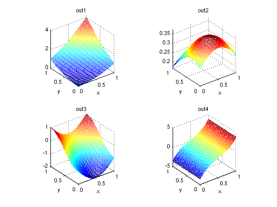

Multiple output variables
Real-world problems usually have more than a single output argument. Sparse grids are very well-suited to deal with such kind of problems, since the regular structure allows to construct good approximations for multiple output variables at once.
The sparse grid interpolation package is designed to make dealing with multiple output arguments easy, as the following example demonstrates.
Example
Consider the following simple test function with multiple output arguments:
type multiout.m
function [out1, out2, out3, out4] = multiout(x,y) % MULTIOUT Test function with four output arguments out1 = (x+y).^2; out2 = 1./exp(1+(x-0.5).^2+(y-0.3).^2); out3 = sin(pi*(2-x))+cos(pi*(1-y)); out4 = sinh(4.*(x-0.5));
spvals will automatically compute interpolants with respect to all four output variables if the number of output variables is specified in the sparse grid OPTIONS structure:
nout = 4; options = spset('NumberOfOutputs', nout, 'Vectorized', 'on'); z = spvals(@multiout, 2, [], options)
z =
vals: {4x1 cell}
gridType: 'Clenshaw-Curtis'
d: 2
range: []
maxLevel: 5
estRelError: 0.0034
estAbsError: 0.0249
fevalRange: [4x2 double]
minGridVal: [4x2 double]
maxGridVal: [4x2 double]
nPoints: 145
fevalTime: 0.0392
surplusCompTime: 0.0129
indices: [1x1 struct]
Note that the output parameters of the objective function must all be scalar. The number of outputs nout specified in the options structure may be smaller than the actual number of outputs. In this case, interpolants are constructed only with respect to the first nout arguments.
To compute interpolated values, the desired output argument must now be specified. This is done by adding an additional field selectOutput to the structure z prior to the call to the spinterp function. The following code plots the four computed interpolants:
for k = 1:nout z.selectOutput = k; subplot(2,2,k); ezmesh(@(x,y) spinterp(z,x,y), [0 1]); axis square; title(['out' num2str(k)]); end
An additional example of using multiple output arguments with spvals is given by the demo spdemovarout available at the command line or from the demos page.